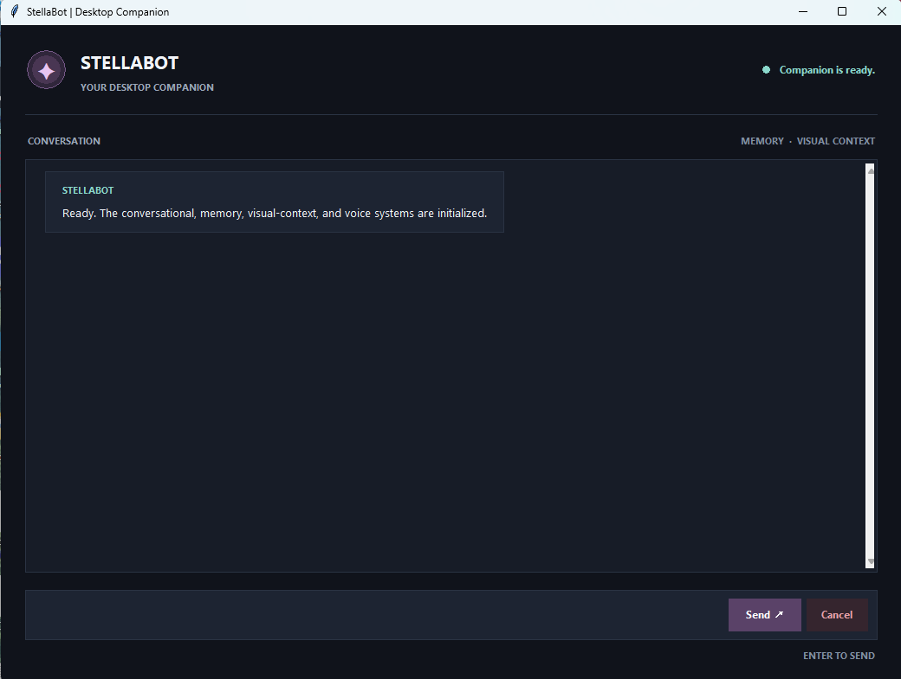
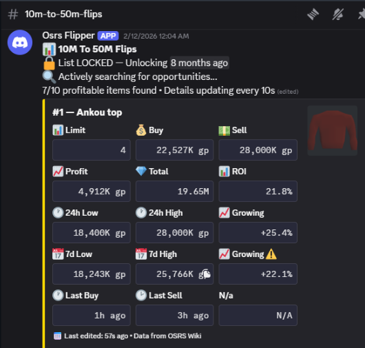

I build the pipelines, daemons, and simulated adversaries that other people's roadmaps depend on.
Seven projects below, spanning data, media, and security. They range from working tools to prototypes, each documenting a different set of engineering decisions, implementation constraints, and lessons from building software.
Across these projects, the tech stacks vary: Python, Node, PowerShell, FFmpeg, Discord's API, Socrata's API, and Google's PageSpeed API. The recurring theme is designing around real constraints: external services fail, inputs vary, and uncertain results need to be handled deliberately.
- Verify, don't assume. The OSRS daemon won't trust a price without checking it against recent history first. StellaSnipes won't call a domain "clean" without an evidence trail behind that verdict. StellaOpsec keeps selected configuration observations separate from conclusions, rather than treating inventory as proof of security.
- Design for failure. Several projects use timeout, retry, or fallback handling around external services. The exact safeguards vary by integration; they reduce specific failure risks rather than guaranteeing uninterrupted operation.
- Keep a human in the loop where it actually matters. StellaStudios holds finished output for review before publishing. StellaSnipes routes unverifiable domains to a review queue instead of guessing. Automation that removes judgment entirely isn't more valuable, it's just wrong faster.
The common thread is practical engineering judgment: choosing what to automate, where to preserve human review, and how to make uncertainty visible rather than hiding it.





AI is a tool. Judgment is still the operator's job.
My projects are developed through an iterative, AI-assisted process. I use models to accelerate implementation, explore alternatives, and investigate unfamiliar problems, but I don't treat their output as authoritative. The value comes from how the tool is directed, challenged, and held accountable to the wider engineering context.
01 / Challenge the reasoning
I actively interrogate proposed implementations, question their assumptions, and demand justification for design decisions. I allow the model to explore beyond the immediate task when a detour may expose a useful conflict, application, or overlooked use case, provided the reasoning holds up. Agreement is not the objective; finding the strongest defensible solution is.
02 / Account for failure modes
Context-window limits, conversational drift, hallucinations, and stateless API calls all affect reliability. So do weak information sources and search systems that reward visibility rather than accuracy. A confident answer can still be wrong, incomplete, or detached from the actual implementation. I account for those limitations instead of mistaking fluency for evidence.
03 / Verify, don't defer
Models can reframe a question, narrowly rebut a claim while missing its substance, distort emphasis, construct strawmen, or dismiss inconvenient evidence. I watch for those patterns, pin the discussion back to its original context, and investigate disagreements rather than accepting either the model's conclusion or my own by default. I adopt its reasoning only when it withstands scrutiny.
04 / Learn beyond the familiar
When a model introduces a concept or tool I have not used, I do not blindly implement it or reject it because it is unfamiliar. I ask what it does, why this approach fits the problem, and what tradeoffs it introduces. I then check those claims against external documentation and independent sources before deciding whether to adopt, adapt, or redirect the recommendation. The process expands my technical range while keeping the decision-making mine.
The principle: AI can generate possibilities, challenge assumptions, and accelerate execution. It cannot be trusted to police its own reasoning. That responsibility stays with the operator, who must preserve context, demand intellectual honesty, and verify that an answer has merit before building on it.
See what the systems actually produce.
Interface captures, generated media, a sample audit report, and full sanitized public-record data samples are available in one place.
Foundational web development training
Formal coursework is part of the background, not the headline. The projects above show how that foundation has been applied to larger systems and working tools.